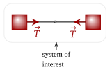

Let's analyze our baton again. To keep it simple, let us have it fall straight down in free fall. If we track the movement of the two ends of the baton, we can see it is really complicated due to it rotating.

However, we can see in the baton, there is, like we saw before, a point wherein it falls precisely in free fall. In other words, unlike everywhere else on the baton, this point is as if it is only under the force of gravity.
To simplify the calculations, let's let the mass of the rod connecting the two ends have negligible mass, and thus the baton is basically two masses. In particular, they are two particles with a certain mass, which let's call and .
Now, for the baton in free fall, the two masses have a weight acting on them. Overall, these two net forces act on the object, giving it an acceleration.

Thus, we know the net force on this baton is as such.
Now, using the Law of Acceleration, we can write out the equation as the following. We will use the subscript "cm" for the movement of the entire system, since we know that this point can substitute for the entire complicated rigid object.
We know that the mass of the entire system, which we've written as , is the sum of the two masses. Thus, we can substitute that.
Great; we've got an expression for the acceleration of what this "center of mass" point is. We can also get an expression for the velocity of this point, by integrating the above equation. Then, we can integrate it again to get the position.
Now, if we know where the two objects are in relation to a certain coordinate system, we can get the position of the center of mass. Great!
Exercise 1a
A baton is made up of two identical 1.0kg connected by a massless rod of length 10.0m. Where on the rod is its center of mass?

Solution
The above figure is one way to draw the baton. Here, we can have one mass be at point , while the other we can set as . Plugging in what we know, we have this formula.
This means that the position of the center of mass is halfway between the two masses.
Exercise 1b
The baton is fitted such that one end is 2.0kg, while the other is 1.0kg. Let the end at the origin be the 1.0kg end. Where is the position of the center of mass of the baton, now?
Solution
We will reuse the same equation, but just switch out the masses.
This means that it is 2/3 of the way of the bar, closer to the 2.0kg mass.
One thing to note when finding the center of mass is that any coordinate system will give the position of the center of mass relative to the object. For example, if we were to place the 2kg object in the above example at the origin, we would've gotten that the mass is still at the place where we calculated.
We also noted in our study of systems earlier to not include "internal forces" into this. Thus, internal forces within the system don't contribute to the movement of the center of mass. To see this, imagine the two masses are instead connected by a taut massless string. There is tension in the system, yet the CM won't move since there are no net external forces.

Question 1
(HRK Q7.12) Can a sailboat be propelled by air blown at the sails from a fan attached to the boat? Explain your answer.
Answer
No. To see this, take the system to be of the sails and the fan. Thus, the wind from the fan is an internal force within this system. Since it is an internal force, it can't do anything to the motion of the center of mass, and thus the boat does not move.
Question 2
(HRK Q7.14) If only an external force can change the state of motion of the center of mass of a body, how does it happen that the internal force of the brakes can bring a car to rest?
Answer
It is not the act of engaging the brakes that stops the car. The friction from the road to the car is the one that stops the system. Taking the car-brake as our system, the friction of the road is an external force.
Exercise 2
(HRK E7.4) Two skaters, one with mass 65 kg and the other with mass 42 kg, stand on an ice rink holding a pole with a length of 9.7 m and a mass that is negligible. Starting from the ends of the pole, the skaters pull themselves along the pole until they meet. How far will the 42-kg skater move?
Solution
One thing to note is that the pulling of the skaters on the pole is an internal force. To see this, take the system to be of the two dancers, with acting like a rope. The tension of the dancer pulling on the rope acts within the system, and thus is an internal force.
With that taken aside, if they continue moving at this rate, they'll find themselves exactly at the center of mass. Thus, we compute for that. To simplify, let's let the 42 kg dancer be at the origin and let the other be at the end of the pole.
Thus, since we set the 42 kg dancer at the origin, they'll move 5.9m before they meet.